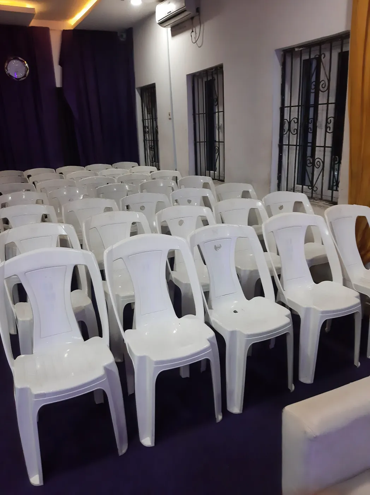
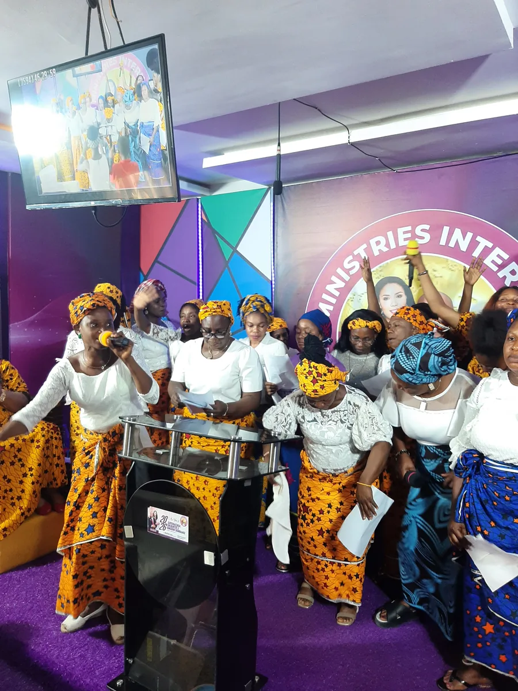
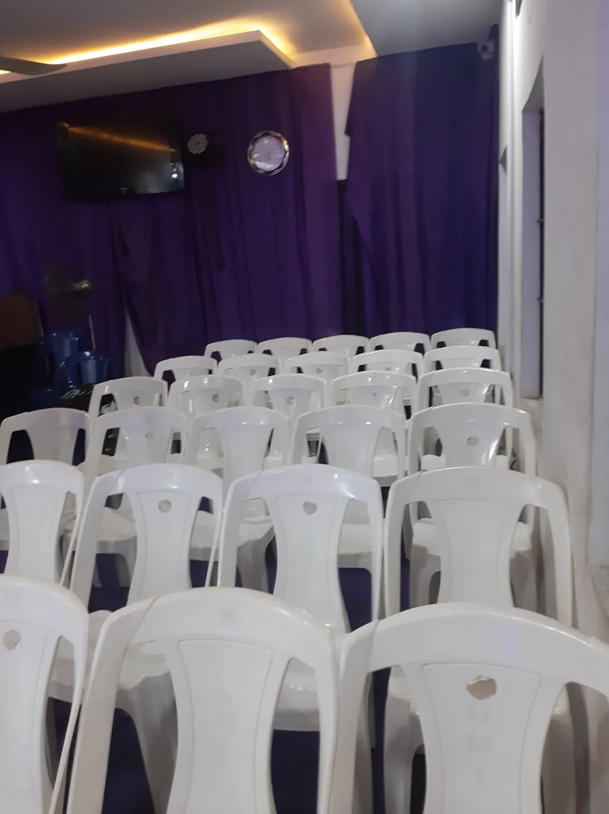

Biblical foundation
Rooted in God's Word and practical Christian living.
Uwem Ministries International
A church community in Uyo, Nigeria
Celebrating Jesus Christ Everyday
Raising Kingdom Champions, Transforming Lives, and Advancing God's Kingdom.
Faith for everyday life. A community to grow with. A place to discover God's purpose and grow in Christ.
Explore our ministriesWelcome to Uwem Ministries International
A Christ-centred, Bible-believing and Holy Spirit-led ministry, committed to spiritual growth, restored hope and the work of God's Kingdom.

Under the spiritual leadership of Apostle Dr. Mrs. Uwem Abasiodu, the ministry proclaims the Gospel of Jesus Christ and equips believers with biblical truth for everyday life.
Through God's Word, prayer, worship and the Holy Spirit, we seek to nurture spiritual maturity and encourage individuals and families to discover and fulfil their God-given purpose.
People from all walks of life are welcome to grow in faith, find encouragement and take their next step with Christ.
Discover what guides usRooted in God's Word and practical Christian living.
Encouraging faith, prayer, worship and discipleship.
A place for fellowship, care and mutual encouragement.
Equipping people to serve in their families and communities.
What we believe and why we serve
To raise spiritually empowered believers who demonstrate the love, power, glory and dominion of Jesus Christ—transforming communities and nations through the Gospel.
“The kingdoms of this world are become the kingdoms of our Lord, and of his Christ; and he shall reign for ever and ever.”
Revelation 11:15 · KJV
We proclaim the Gospel, make disciples, strengthen families, empower women and youth, and equip believers to fulfil their God-given assignments.
Through biblical teaching, prayer, worship, evangelism, mentorship and compassionate outreach, we seek to build a spiritually mature, purpose-driven community that can serve its generation for Christ.
Our shared commitments
These are the principles we seek to carry into our worship, relationships and service.
God's Word is the foundation of our faith, teaching and daily life.
We value prayer, the ministry of the Holy Spirit and spiritual growth.
We seek to show Christ's love through kindness, service and care.
We encourage godly character, accountability and spiritual excellence.
We equip leaders to serve with humility, wisdom and courage.
We nurture women and young people to grow and influence their communities.
We share the Gospel and serve across cultures and nations.
Spiritual leadership
Apostle Dr. Mrs. Uwem Abasiodu
General Overseer, Uwem Ministries International
Apostle Dr. Mrs. Uwem Abasiodu is a Christian minister, spiritual leader, teacher, psychotherapist and advocate for spiritual transformation, Kingdom advancement, and the empowerment of women, youth and families.
Her ministry emphasises God's Word, prayer, spiritual growth and the importance of discovering and fulfilling one's God-given purpose. Through preaching, teaching, mentorship, conferences and community engagement, she encourages believers to deepen their relationship with God and become agents of positive change.
Her passion is to see lives restored, destinies fulfilled, families strengthened and believers equipped to manifest God's glory in every sphere of life.
Grow, connect and serve
There are different ways to grow in faith, build meaningful relationships, develop your gifts and serve God. Take a first step by asking us how to connect.
Youth Ministry
We encourage young people to grow in faith, understand their identity in Christ, build godly character and develop the gifts they can use in their communities.
Connect with the Youth Ministry
02Women's Ministry
Our Women's Ministry encourages women to deepen their relationship with God, discover their gifts, strengthen one another and walk confidently in their God-given purpose.
Connect with the Women's Ministry
03Men's Fellowship
Our Men's Fellowship offers men an opportunity to grow in faith, encourage one another and develop godly character for life at home, at church and in the wider community.
Connect with the Men's FellowshipWider ministry focus
Make room to gather
Join us for worship, biblical teaching and prayer. The countdowns use the Africa/Lagos time zone and roll forward automatically.
Service times are transcribed from the supplied ministry banner. Please contact the church to confirm current arrangements before travelling.
Sunday gathering · Supernatural Movement
Service time 9:00 AM WAT
Thursday midweek service
Service time 5:30 PM WAT
First Friday of each month
Service time 9:00 PM WAT
Also listed on the ministry banner · WAT
Your first visit
Come as you are. Meet the community, hear God's Word and take the next step at your own pace. If you need help with directions or service details, contact us before you travel.
Find us in
The map link searches the street address shown on the supplied ministry banner. Please contact us if you need help confirming the exact location.
Service information
Service times can change. Call or message the church before your first visit if you would like to confirm the current schedule or ask for directions.
Contact the churchA moment for the Word
Spiritual Growth for Everyday Living
Where the Word shapes your life.
The Secret Altar connects biblical truth with everyday Christian living. Take a little time to pause, reflect on Scripture and consider how God's Word can shape your decisions, relationships and daily walk with Christ.
The full devotional is shared in the WhatsApp community. The Instagram link opens the ministry's official profile for devotional insights.
Scripture that strengthens our faith
We return to Scripture for hope, perspective and a reminder of God's love and care. These passages are offered as reflections—not promises of identical outcomes for every person.
“Nay, in all these things we are more than conquerors through him that loved us.”
Romans 8:37 · KJV
“For thou, LORD, wilt bless the righteous; with favour wilt thou compass him as with a shield.”
Psalm 5:12 · KJV
“It is of the LORD’s mercies that we are not consumed, because his compassions fail not. They are new every morning: great is thy faithfulness.”
Lamentations 3:22–23 · KJV
“Now unto him that is able to do exceeding abundantly above all that we ask or think, according to the power that worketh in us,”
Ephesians 3:20 · KJV
“For God so loved the world, that he gave his only begotten Son, that whosoever believeth in him should not perish, but have everlasting life.”
John 3:16 · KJV
Stay connected beyond Sunday
Join the ministry's WhatsApp community to keep in touch with Uwem Ministries International. The Secret Altar devotional is shared there; use the invitation link to join and see what is currently being shared.
Join our WhatsApp communityThis community invitation is separate from the direct WhatsApp contact button for general enquiries.
A quiet next step
You don't need perfect words before you reach out. If something is weighing on your heart, you can share a prayer request with the ministry. Our team will handle it with care and discretion.
Your privacy matters. Requests are sent through the ministry's Tally form and are not displayed on this website. Please share only what you are comfortable submitting; requests should be seen only by the people authorised to handle them.
Submit a prayer requestIf the form does not load, open the prayer request form in a new tab.
A practical way to get here
We want getting to church to be easier. Call to enquire about the free church bus service and confirm available pickup information before you travel.
We are here to help you find the next step
Ask about visiting, service details or the ministry. We'd be glad to help you connect with the right next step.
Nigeria
+234 807 114 7348 +234 806 894 1773Canada / International
+1 647‑702‑6906For a prayer request, please use the dedicated form. For general enquiries, call or message the ministry.
You are welcome here
Whether you're taking your first steps in faith, looking for a church community or hoping to keep growing in Christ, we welcome you. Come worship with us, hear God's Word and meet the community.